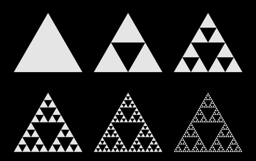

بواسطة المجسمات الأفلاطونية، يمكن خلق بنيات فضائية مذهلة ذات خصائص كسورية. لتحقيق هذه الغاية، يجب وضع على قمم مجسم افلاطوني نسخات مصغرة عن هذا المجسم عينه. بتكرار هذه العملية، يمكن الحصول على أجسام مذهلة. عند الإنطلاق من رباعي الأسطح، يمكن انتاج جسم كسوري مشهور: رباعي الوجوه من سيربينسكي.
في هذا البرنامج، يمكن برم الأجسام عن طريق سحبها.
|
 |
مثلث سيربينسكي ثنائي الأبعاد
وعملية توليده.